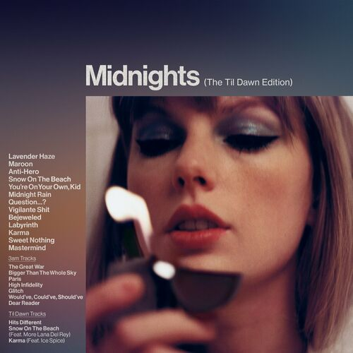

Midnights (2022)
- You're On Your Own Kid:

Informações Gerais
- Artista: Taylor Swift
- Data de Lançamento: 21 de outubro de 2022
- Gênero: Synth-pop, Electropop, Dream Pop
- Gravadora: Big Machine Records
- Produtor: Jack Antonoff, Taylor Swift, e vários outros produtores
Faixas Notáveis
- "You’re on Your Own, Kid" - Uma faixa que explora o crescimento pessoal e a sensação de se encontrar em momentos de solidão.
- "Midnight Rain" - Uma música com uma vibe melancólica e uma produção que combina elementos de synth-pop com uma reflexão sobre o passado e as mudanças na vida.
- "Lavender Haze" – Faixa de abertura com um som atmosférico e uma letra que explora a sensação de estar apaixonado e querer escapar da pressão externa.
- "Anti-Hero" – Um dos singles principais do álbum, que aborda inseguranças e auto-reflexão, com um refrão cativante e uma produção envolvente.
- "Karma" – Uma música com uma melodia dançante e letras que brincam com a ideia de que as ações têm suas consequências.
Legado
- "Midnights" é visto como uma continuação da evolução musical de Taylor Swift, demonstrando sua capacidade de explorar novos gêneros e temas enquanto mantém sua autenticidade como artista. O álbum representa um retorno a uma sonoridade pop mais coesa e experimental, refletindo um período de introspecção e auto-reflexão para Swift.